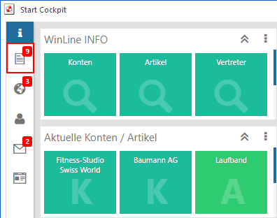
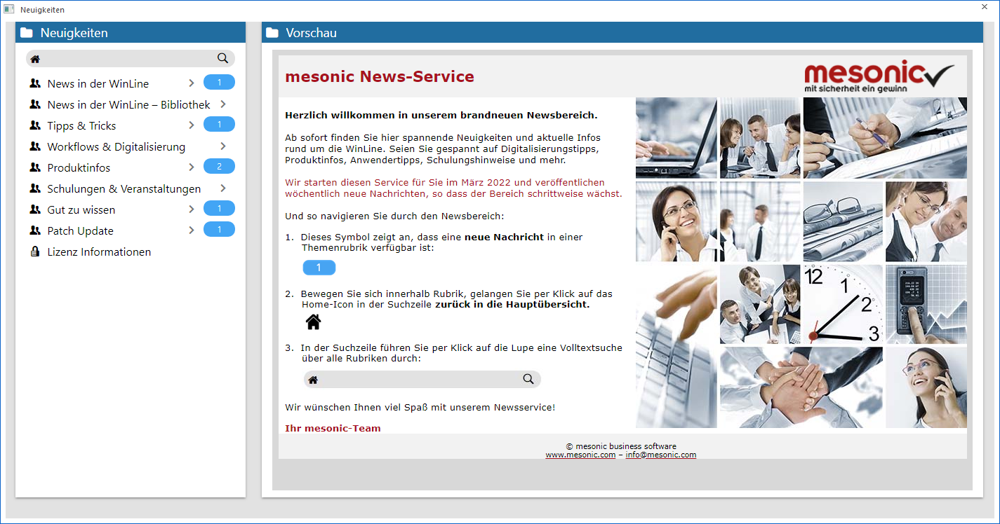
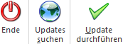

Im Fenster "Neuigkeiten" werden wichtige Information zur WinLine präsentiert. Das Öffnen des Fensters kann wie folgt erfolgen:
ü Automatisch
Das Fenster öffnet
sich automatisch, wenn beim Programmeinstieg festgestellt wurde, dass
Neuigkeiten auf dem mesonic Server verfügbar sind und diese auch downgeloadet
wurden.
Hinweis
Diese Prüfung (inklusive
Download) findet nur 1x pro Tag, beim ersten Login eines Benutzers, statt. Alle
weiteren Benutzer werden über die Quick-Info im WinLine Cockpit auf ungelesene
Neuigkeiten aufmerksam gemacht.

ü Manuell
Durch Anklicken des
Buttons "Internet Update" im Ribbon "INFO CENTER UND MAKROS".

Im linken Teil des Fensters werden die zur Verfügung stehenden Neuigkeiten (downgeloadete Dateien) zur besseren Übersicht in die folgende Bereiche untergliedert:
ü News in der WinLine
ü News in der WinLine - Bibliothek
ü Tipps & Tricks
ü Workflows & Digitalisierung
ü Produktinfos
ü Schulungen & Veranstaltungen
ü Gut zu wissen
ü Patch Update
ü Lizenz Information
Wird die Neuigkeit eins Bereichs ausgewählt, so wird diese auf der rechten Seite angezeigt. Die News aus dem Bereich "News in der WinLine" werden nach einer gewissen Zeit automatisch in den Bereich "News in der WinLine - Bibliothek" verschoben.
Hinweis
In der Übersicht werden nur jene Bereiche angezeigt, für welche der jeweilige Benutzer die Berechtigung hat. Diese Berechtigungen können in der Benutzeranlage im ADMIN vergeben werden.
D.h. wurden für einen Benutzer nur der Bereich "Gut zu wissen" freigeschaltet, so wird eben nur dieser dargestellt (weitere Infos dazu finden Sie im Kapitel "Benutzeranlage - Berechtigungen" im ADMIN-Handbuch).
Grundsätzlich gibt es 3 Arten von Neuigkeiten:
ü Beiträge
Je nach Berechtigung
(Anzeige der Bereiche) werden diverse Beiträge zu den unterschiedlichsten Themen
dargestellt. Noch nicht gelesene Beiträge werden hierbei in Fettschrift
gekennzeichnet und der Bereich mit einer Zahl gekennzeichnet.
ü Updates
Im Bereich "Patch
Update" wird das aktuellste WinLine Update angezeigt. Durch Anklicken des
Buttons "Update durchführen" wird das Update durchgeführt und im Anschluss daran
ggfs. an vorhandene Workstations verteilt.
Achtung
Die Anwahl des Buttons ist nur im WinLine ADMIN möglich!
ü Lizenz Information
In diesem
Bereich wird die Endkunden-Lizenz laut mesonic Lizenzserver dargestellt.
Hinweis
Diese Information steht nur Benutzer des Typs "Administrator" oder mit der Administratorenberechtigung "Lizenzadministration" zur Verfügung.
Buttons

Ø Ende
Durch Anklicken des Buttons "Ende" wird das Fenster geschlossen.
Ø Updates suchen
Durch Anklicken dieses Buttons erfolgt am mesonic Server eine Prüfung, ob neue Neuigkeiten bzw. ein neues Patch Update zur Verfügung stehen.
Ø Update ausführen
Durch Anklicken des Buttons "Update durchführen" kann ein aktueller Patch bzw. ein Versionsupdate heruntergeladen und installiert werden. Folgende Voraussetzungen sind hierbei zu erfüllen:
ü Es muss ein Patch bzw. Update vorhanden sein, welcher/s größer der aktuellen Version ist.
ü Der Benutzer muss ein Administrator sein.
ü Das Fenster "Neuigkeiten" muss am WinLine Daten-Server über den WinLine ADMIN aufgerufen werden.
Hinweis
Wurde die zum Patch bzw. Versionsupdate zugehörige "patchupdate.zip" -Datei bereits heruntergeladen und existiert im WinLine-Verzeichnis, so wird diese automatisch verwendet, d.h. es findet kein erneutes Laden der Zip-Datei statt. Hierbei wird zur Sicherheit der Inhalt der Datei im Vorfeld analysiert. Sollte der Inhalt kleiner der installierten Programmversion sein, so wird der Button "Update durchführen" deaktiviert!